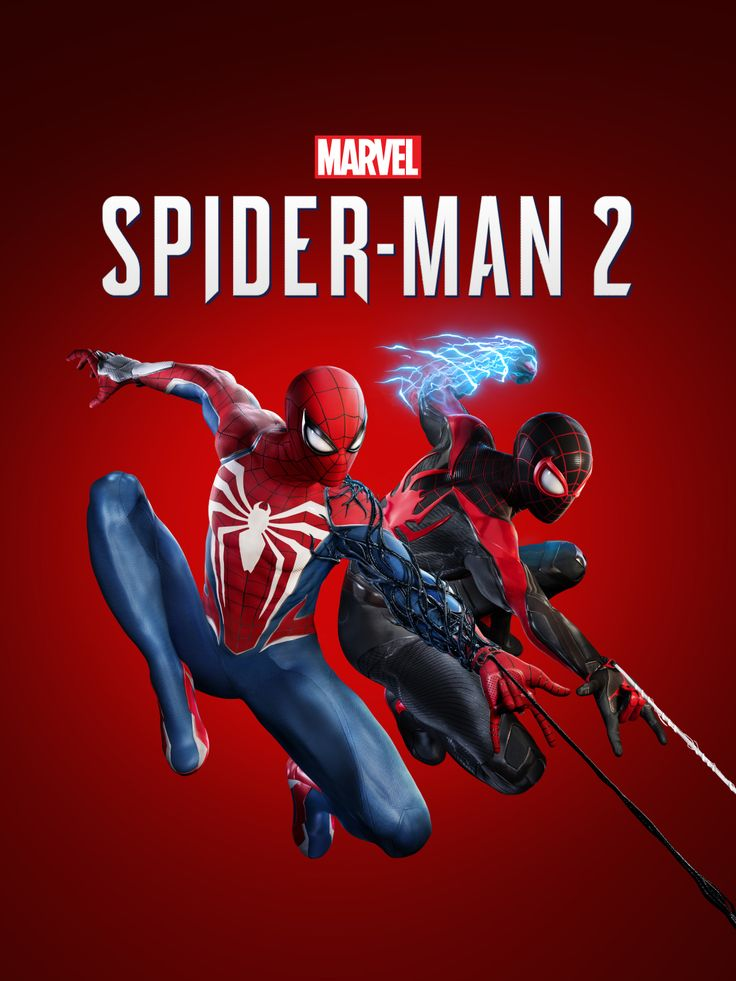

Marvel's Spider-Man 2 Review

Introduction
Five years after the first game and three years after Miles Morales, Insomniac Games has finally released the sequel fans have been waiting for. Marvel's Spider-Man 2 is a triumph on almost every level, delivering a darker, more personal story while expanding the gameplay in meaningful ways. With both Peter Parker and Miles Morales playable, and the introduction of the symbiote suit and Venom, this is the most ambitious Spider-Man game yet.
The story picks up some time after the events of Miles Morales. Peter is struggling to balance his life as Spider-Man with his responsibilities, while Miles is growing into his own as a hero. When Kraven the Hunter arrives in New York, targeting the city's most dangerous criminals, and the symbiote attaches itself to Peter, everything changes.
Two Spider-Men, One Story
The dual-protagonist system is handled brilliantly. You can switch between Peter and Miles at almost any time during free roam, and certain missions are designed specifically for one character or the other. Both feel distinct - Peter with his symbiote abilities and mechanical arms, Miles with his venom powers and invisibility. Their banter when swinging together is a highlight, capturing the mentor-mentee relationship perfectly.
The symbiote suit completely changes Peter's gameplay. He becomes faster, stronger, and more aggressive, with new abilities that reflect the suit's corrupting influence. The way Insomniac handles Peter's transformation is masterful, and you'll feel the difference in how he moves and fights.
Kraven and Venom
Kraven the Hunter is a phenomenal antagonist. Voiced by the legendary Jim Pirri, he's not just a villain - he's a force of nature. His arrival in New York sets the entire plot in motion, and his hunting of the city's supervillains creates some of the game's most intense moments. He respects strength above all else, and his dynamic with both Spider-Men and Venom is fascinating.
And then there's Venom. Tony Todd's performance as the iconic symbiote is absolutely chilling. His voice alone will send shivers down your spine. The symbiote's influence on Peter drives the story, and when Venom fully emerges... let's just say it's worth the wait. The final act of the game is some of the best superhero storytelling in any medium.
Web-Swinging and Traversal
The web-swinging has been perfected. It's faster, more fluid, and more fun than ever. New additions like the web wings let you glide across the city, and you can now launch yourself from water and use wind tunnels to gain speed. Traversal feels effortless and exhilarating, and you'll never get tired of just swinging around New York.
The map has been expanded to include Brooklyn and Queens, doubling the size of the playable area. Each borough feels distinct, from the industrial areas of Queens to the vibrant streets of Brooklyn. Fast travel is nearly instantaneous thanks to the PS5's SSD, but you'll rarely want to use it when swinging is this good.
Combat Evolution
Combat builds on the foundation of the first games while adding meaningful depth. Both Spider-Men have unique skill trees and abilities. Peter's symbiote powers let him unleash devastating attacks, while Miles' venom powers have been expanded with new techniques. Parrying has been added, and it's essential for tougher enemies and boss fights.
The gadget system returns with new toys to play with, and the ability to chain abilities and gadgets together creates a flow that's incredibly satisfying. Enemy variety is excellent, with Kraken's hunters providing a new challenge alongside returning foes.
Pros and Cons
Pros
- Two playable Spider-Men with distinct abilities
- Tony Todd's Venom is terrifying and incredible
- Kraven is one of gaming's best villains
- Web-swinging has never been better
- Brooklyn and Queens double the map size
- Symbiote gameplay is a game-changer
Cons
- Some side activities feel repetitive
- Main story is relatively short (15-18 hours)
- MJ stealth sections return (though improved)
Visual and Audio Design
This is one of the best-looking games on PS5. The level of detail in character models, especially during cutscenes, is astonishing. Peter's symbiote transformation is rendered beautifully, with the suit shifting and moving in real-time. The ray-traced reflections in the city's skyscrapers add incredible depth.
The soundtrack by John Paesano returns and is better than ever, with new themes for Venom and Kraven that perfectly capture their menace. The voice acting across the board is superb, with Yuri Lowenthal delivering his best performance yet as Peter, and Nadji Jeter continuing to shine as Miles.
Side Content
The side missions in Spider-Man 2 are a mixed bag, but when they're good, they're great. Missions featuring Howard the Pigeon Lady are heartwarming, and Brooklyn Visions Academy side stories add depth to Miles' world. The Mysterio missions are a highlight, offering unique combat challenges and a fun narrative.
The game also includes a photo mode that's incredibly robust, letting you capture stunning shots of your favorite moments. The EMF experiments and Hunter blinds can feel a bit repetitive, but they're worth completing for the rewards and story bits.
Verdict
Marvel's Spider-Man 2 is Insomniac Games at the peak of their powers. It's a sequel that improves on every aspect of its predecessors while delivering a story that's darker, more emotional, and ultimately more satisfying. The symbiote arc is handled with care, Venom is a terrifying presence, and Kraven joins the ranks of gaming's greatest villains. With two Spider-Men to play as, a bigger map, and traversal that's pure joy, this is essential for any superhero fan. A spectacular 9/10.
Comments (23)
Tony Todd as Venom is absolute perfection. That voice is ICONIC. Every time he spoke I got chills. Best Venom portrayal since the 90s cartoon. Insomniac nailed it.
The web-swinging in this game is absolutely perfect. I spent hours just swinging around Brooklyn and Queens. The wind tunnels and web wings make traversal so much fun. Best movement in any open world game, period.
Kraven is one of the best villains in any Spider-Man media. The way he hunts the other villains, the respect he shows for strong opponents, and his final confrontation with Venom... absolute cinema. Jim Pirri killed it.
I wish the main story was longer. 15 hours felt too short after how massive the first game was. That said, those 15 hours are some of the best gaming I've experienced. Quality over quantity I guess!
Unpopular opinion but I actually liked the MJ missions this time! She has a taser now and can actually fight back. Much better than the first game's stealth sections.
Thanks for all the great comments everyone! I'm so glad you're all loving the symbiote stuff as much as I did. Tony Todd really is something special as Venom. What was your favorite moment in the game? Let's discuss!
Add Your Comment